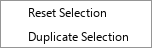
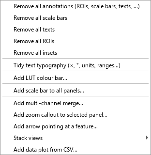

PyFigures
A scientific figure assembly tool — compose, annotate, and export publication-ready figures by dragging and dropping images.
Overview
PyFigures lets you build multi-panel scientific figures without writing code. You drag images onto the canvas, arrange them into rows, columns, or panels, add annotations (scale bars, ROIs, text labels, lettering), and export as SVG, PDF, or raster.
The core workflow is:
Window layout

docs/capture_screenshots.py to generate this image.PYTHONPATH=..:../BAtools_pkg python3 docs/capture_screenshots.py from the project root to auto-generate all screenshots in docs/screenshots/.
The window is divided into four zones:
| Zone | Description |
|---|---|
| Menu bar | File, Selection, Lettering, Annotations, Template, View, Help menus. |
| Toolbar | Quick-access buttons, figure-width spinner, unit selector, spacing, auto-lettering toggle. |
| Canvas | Scrollable drawing area. Drag images here; click to select shapes; right-click for context menus. |
| Status bar | Bottom strip. Shows loading messages and a progress bar during image loading. |
Toolbar

| Control | Action |
|---|---|
| Open | Open a .pyf file and append its contents to the current canvas. |
| New | Clear the canvas and start a new blank figure. |
| Save | Save the current figure to its .pyf file. Uses Ctrl S. |
| Export raster | Export as JPG, TIFF, or PNG (see Export). |
| Undo / Redo | Step through the edit history. Ctrl Z / Ctrl Shift Z. |
| Figure width | Set the pixel width of the selected element(s). The label next to it shows the equivalent in the chosen unit. |
| Unit selector | Switch the display unit between Cm and Inches. |
| ✓ (Apply size) | Apply the width value to the current selection. |
| Y Spacing | Vertical gap (pixels) between elements in the canvas layout. |
| Auto Lettering | When checked, panels are automatically labelled a, b, c… starting from the letter in the adjacent field. |
| Page Bounds | Toggle a page-size overlay on the canvas. Opens a dialog to set width and height. |
Menu bar
File menu

| Entry | Description | Shortcut |
|---|---|---|
| Open… | Opens a .pyf figure, replacing the current one. | Ctrl O |
| Merge into current figure… | Appends the contents of another .pyf to the current figure. | |
| New | Clears the canvas and resets the current figure. | Ctrl N |
| Add image from URL / OME-Zarr… | Adds an image from an http(s) URL, or an OME-Zarr image (a URL such as https://…/image.zarr, e.g. from the IDR, or a local .zarr folder) as a new row. For OME-Zarr you pick the pyramid level; pixel size and channel colours come from the file. Needs pip install pyfigures[zarr]. | |
| Draft figure from folder… | Assembles a first-pass figure from a folder of images and CSVs: grid layout, data plots, scale bars, A/B/C letters. See Automation. | |
| Build figure from recipe… | Builds a figure from a YAML/JSON recipe — reproducible, rebuildable when the data change. See Automation. | |
| Search figure library… | Indexes a folder tree of past .pyf figures and searches them by panel, label or caption. | |
| Save | Saves the figure to the current .pyf file. Prompts for a filename on first save. | Ctrl S |
| Save As… | Saves the figure to a new filename. | |
| Save And Consolidate… | Saves the figure and copies all referenced image files into a .files folder alongside the .pyf, making the project fully portable. See Consolidation. | |
| Compare with another version… | Visual diff against another .pyf: side-by-side renders, a pixel-difference overlay and a list of what changed. | |
| Figure caption / legend… | Writes the figure's caption (stored beside the .pyf, exportable for submission). | |
| Alt text (accessibility)… | Drafts and edits the figure's description for screen-reader users. | |
| Copy style from another figure… | Gives this figure the fonts, letters, scale bars, spacing and chart styling of another .pyf. | |
| Export As ▸ | SVG, PDF, PDF + LaTeX, editable PowerPoint, Adobe Illustrator script, PNG, TIF, JPEG, print-ready CMYK TIFF, video, source-data bundle. See Export. |
Selection menu

| Entry | Description | Shortcut |
|---|---|---|
| Reset Selection | Deselects everything on the canvas. | Esc |
| Duplicate Selection | Creates a copy of the currently selected element(s). | Ctrl D |
Lettering menu
| Entry | Description |
|---|---|
| Parameters | Opens the lettering configuration dialog: set the starting letter, case (upper/lower), font, and color for automatic panel labels. See Auto-lettering. |
Annotations menu

| Entry | Description |
|---|---|
| Remove all annotations (ROIs, scale bars, texts, …) | Removes every annotation drawn on every image in the figure. |
| Remove all scale bars | Removes only scale bar annotations. |
| Remove all texts | Removes only text annotations. |
| Remove all ROIs | Removes all drawn ROI shapes (circles, rectangles, polygons, lines, freehand, points). |
| Remove all insets | Removes inset images embedded in other images. |
| Tidy text typography | Safe typography fixes on every label: 2*3→2×3, 37 degrees C→37 °C, 10µm→10 µm, 10-20→10–20, -5→−5. |
| Add LUT colour bar… | Inserts an intensity calibration bar matching a LUT. |
| Add scale bar to all panels… | Adds a scale bar to every panel at once. |
| Add multi-channel merge… | Overlays 2–4 single-channel images (e.g. DAPI + GFP + RFP) into one pseudo-coloured panel. |
| Add zoom callout to selected panel… | Boxes a region of the selected image and shows it magnified in a corner inset, joined by leader lines. |
| Add arrow pointing at a feature… | An arrow whose tip stays on the chosen pixel whatever the figure size. |
| Stack views ▸ | Montage of frames, channel split, kymograph along a line, orthogonal views (XZ / YZ). See Stacks & movies. |
| Add data plot from CSV… | Bar / box / violin / scatter / grouped plot from a CSV of measurements, with significance brackets. |
QC menu
| Entry | Description |
|---|---|
| Audit figure | Lists panels missing a scale bar or a letter. |
| Check journal compliance… / Apply journal guidelines… | Checks (or applies) a journal's width, fonts, minimum font size and resolution. |
| Check print resolution… / Enforce minimum font size… | Effective dpi of every panel at the printed size; raises every text to a minimum size. |
| Check image integrity… | Screens panels for reused, flipped/rotated or internally cloned images. |
| Check scale-bar consistency… | Flags panels whose displayed physical scale differs. |
| Pre-submission review (all checks)… | Runs every check at once and lists the questions a reviewer would ask. |
| Adjustment provenance ledger… | Per-panel record of brightness/contrast, LUT, crop, rotation and scripts, with a ready-to-paste Methods paragraph. |
| Fonts (portable / Helvetica)… | What Helvetica/Arial resolve to on this machine, and which portable fonts are available. |
| Check for changed source files… / Remap image paths… | Finds images or CSVs that changed since the figure was saved; repoints moved files. |
Tools menu
| Entry | Description |
|---|---|
| Poster / collage designer… | A separate tool for posters, photo-collage pages and photo albums, where images can be freely placed and rotated. Guide: docs/poster.md. |
Template menu
| Entry | Description |
|---|---|
| Convert figure to template | Replaces all image content with placeholder slots, keeping the layout, annotations, and styling intact. Drop new images onto the template slots to fill them. Ideal for reusing a figure layout across many conditions. See Templates. |
Review menu
| Entry | Description |
|---|---|
| Export for review… | Writes a self-contained HTML page of the figure that co-authors open in any browser to pin comments on panels. |
| Import review comments… / View review comments | Loads their comments back and lists them on the figure. |
View menu
| Entry | Description |
|---|---|
| Theme → System (auto) | Follows the operating system's light/dark setting. |
| Theme → Light | Switches the application to the default light color scheme. The choice is remembered across sessions. |
| Theme → Dark | Switches the application to a dark color scheme (dark-gray backgrounds, light text). The figure/canvas area turns near-black. The choice is remembered across sessions. |
Help menu

| Entry | Description |
|---|---|
| About | Shows version, author and licence information; in the standalone app, a button opens the third-party licences. |
| Show Tips | Opens a scrollable tips dialog with usage hints. |
| List shortcuts | Opens a dialog listing all keyboard shortcuts. |
| Show color-blind assistant | Launches a tool to preview and adjust figure colors for color-vision deficiencies. See Color-blind assistant. |
| Preview figure under colour-blindness… | Shows the whole figure as a deuteranope, protanope or tritanope would see it. |
| User Guide | Opens this user guide in your default web browser. |
| ▶ Beginner Tutorial | Starts a step-by-step interactive tutorial covering the core workflow: drop images, arrange rows, resize, add a scale bar and lettering, then save. |
| ▶ Medium Tutorial | Starts an intermediate interactive tutorial covering .pyf files, labels above/below images, text annotations, and templates. |
| ▶ Advanced Tutorial | Starts an advanced interactive tutorial with expert-level tips and workflows. The tutorial panel appears at the bottom-right of the window and can be dragged to any position. |
| ▶ Publication & QC Tutorial | Makes a finished figure journal-ready: the Annotations batch tools, the whole QC menu, a caption, and the PDF, PDF + LaTeX and print-ready CMYK exports. |
| ▶ Sharing, Review & Accessibility Tutorial | Collaboration and accessibility: portable (consolidated) copies, the Review comment round-trip, fixing moved-file links, colour-blindness checks and theming. |
| ▶ Stacks, Channels & Movies Tutorial | Projections, channel split, montages, kymographs, orthogonal views, channel merges and movie export. |
| ▶ Automate: Drafts, Recipes & Library Tutorial | Draft a figure from a folder, build one from a recipe, search past figures. |
| ▶ Poster Tutorial | Opens the poster / collage designer and guides you through it. |
| ▶ Photo Album Tutorial | Opens the photo album designer (front cover, spreads, back cover) and guides you through it. |
Keyboard shortcuts

| Shortcut | Action |
|---|---|
| Esc | Deselect / clear current selection |
| Delete / Backspace | Delete the selected element |
| ↑ ↓ ← → | Reorder the selected element within its parent group, or nudge its position |
| Ctrl A | Select all elements |
| Ctrl D / Ctrl V | Duplicate the current selection |
| Ctrl S | Save the figure |
| Ctrl Z | Undo |
| Ctrl Shift Z / Ctrl Y | Redo |
Status bar

The status bar at the bottom of the window shows a text message and a compact progress bar during image loading. The message reads Loading N/M image(s)… and the bar fills as each image is decoded in the background. Both are hidden when loading is complete.
Drag & Drop — overview
PyFigures is built around drag-and-drop. You can drop files directly onto the main window from your file manager at any time. Two categories of files are handled:
📄 .pyf files
PyFigures project files. Dropped asynchronously — the window stays responsive while objects load. Multiple .pyf files can be dropped at once.
🖼 Image files
Any raster or vector image supported by the image reader (TIFF, PNG, JPG, SVG, CZI, LIF, …). Multiple images can be dropped together.
.pyf files and images in the same drag operation is not supported. Drop them separately.
Dropping .pyf files
custom_loading_script field trigger a confirmation dialog before loading. Only accept files from sources you trust.
.pyf file while other images are still loading — the queues are merged automatically.
Dropping image files
After the images are loaded a small pop-up context menu appears near the drop location. The available options depend on how many files were dropped and where they landed.
DnD context menu

➕ Add as single image(s)
Each dropped file becomes an independent element on the canvas — no grouping.
↔ To row
Arranges all dropped images side-by-side in a horizontal row group. (Only shown when more than one image is dropped.)
↕ To column
Stacks the images vertically in a column group. (Only shown when more than one image is dropped.)
▦ To panel
Opens a dialog to configure the number of rows and columns, then arranges the images into a grid. (Only shown when more than one image is dropped.)
🎯 Assign to template image
Replaces the template slot under the cursor with the dropped image(s). Only shown when the drop lands on an existing template placeholder. See Dropping onto templates.
✕ Ignore
Cancels the drop operation — nothing is added to the canvas.
Dropping onto template slots
When a figure has been converted to a template, each image slot shows a grey placeholder. Drop one or more images directly onto a placeholder to fill it:
Canvas right-click menu

Right-clicking on the canvas background (no element selected) offers general canvas actions.
Image right-click menu

Right-clicking a selected image offers image-specific operations:
Edit Image
Open the image properties dialog (channels, LUTs, crop, rotation, background).
Duplicate Selection
Creates a copy of the image.
Add scale bar
Attaches a scale bar annotation. Requires the pixel-to-unit conversion factor to be set.
Add text
Adds a text annotation to the image.
Draw ROI
Opens ROI drawing tools (circle, rectangle, polygon, line, freehand, point).
Channel split (Gray / Magenta-Green)
Splits a multi-channel image into separate panels. Only shown for multi-channel images.
Split by a dimension
Splits a multi-dimensional image along a chosen axis. Only shown when extra dimensions exist.
Convert to template
Turns this image into a placeholder slot.
Group right-click menu

Right-clicking a group (row, column, or panel) gives layout and label operations:
Edit Group
Change orientation (row / column) and spacing.
Add Empty image to the group
Inserts a blank placeholder at the end of the group.
Add text labels above / below
Adds a row of text annotations above or below each image in the row. Row groups only.
Add text label left / right of row
Adds a single label to the left or right of the row.
To row / To column / To panel
Re-arrange the group's layout.
Force same width and height
Crops all images in the group to match the first image's dimensions.
Force same AR as first image
Adjusts crop to match the aspect ratio of the first image.
Set / Reset LUT(s)
Apply or clear Look-Up Tables for all images in the group.
Change font for all non-Letter text
Opens a font dialog and applies the chosen font to every text annotation in the group.
Remove all annotations
Strips all ROIs, scale bars, and text from every image in the group.
Auto-lettering

When the Auto Lettering checkbox in the toolbar is enabled, PyFigures automatically overlays panel labels (a, b, c… or A, B, C…) on each top-level element.
- Set the starting letter in the one-character field next to the checkbox.
- Configure font, size, color, and case via Lettering → Parameters.
- Letters are rendered live and update as you add or remove panels.
- Individual letter text elements are locked — edit them only through the Parameters dialog.
Undo / Redo
Every user action that modifies the figure is saved to an undo stack stored as temporary
.xml files on disk. This means the history survives even large figures with
many images.
| Action | Shortcut |
|---|---|
| Undo | Ctrl Z |
| Redo | Ctrl Shift Z or Ctrl Y |
.pyf file — it is lost when you close the application.
Export
All exports are under File → Export As:
| Format | Menu entry | Notes |
|---|---|---|
| SVG | Export As → SVG | Vector format. Ideal for further editing in Inkscape or Illustrator. |
| Export As → PDF | Vector format suitable for submission. | |
| PDF + LaTeX | Export As → PDF + LaTeX… | A PDF without text plus a LaTeX overlay, so labels use your document's fonts and real math. |
| PowerPoint (editable) | Export As → PowerPoint (editable)… | One slide the size of the figure, one group per panel: pictures plus editable text boxes (letters, labels, scale-bar text) and shapes (scale bars, ROIs, arrows, brackets). Text inside data plots comes as outlines. |
| Adobe Illustrator script | Export As → Adobe Illustrator script (.jsx)… | A script plus a <name>_assets image folder. In Illustrator, File → Scripts → Other Script… rebuilds the figure with one group per panel, live text and vector paths. |
| Raster (PNG / TIF / JPEG) | Export As → PNG / TIF / JPEG | A dialog lets you choose the DPI. TIFF is recommended for publication. |
| Print-ready TIFF | Export As → Print-ready TIFF (CMYK)… | High-DPI CMYK (or RGB) TIFF for print submission. |
| Video | Export As → Video (animate time-stacks)… | Animates the figure's movies and time stacks. See Stacks & movies. |
| Source data bundle | Export As → Source data bundle… | A folder with the rendered figure, each panel's source image or CSV, and provenance — for journals that ask for source data. |
Automation: drafts, recipes, library
File → Draft figure from folder… assembles a first-pass figure from a
folder of images and CSVs. File → Build figure from recipe… builds a
figure from a short YAML or JSON file that lists rows of images (or file patterns), LUTs,
crops, scale bars, letters, drawings, insets, journal size, caption, checks and exports —
rebuild it whenever the data change. The same recipe runs from the command line
(python -m pyfigures.recipe build fig.yaml) and through the MCP server.
Full guide: docs/RECIPES.md; example: docs/recipe_example.yaml.
File → Search figure library… indexes your past figures so you can find and reuse one by panel, label or caption.
Stacks & movies
Z stacks, time stacks and movies (.mp4, .mov, .avi,
.mkv, …) are added like any image. Annotations → Stack views
turns the selected stack into a montage of frames, a channel split, a kymograph along a
line, or orthogonal views (XZ / YZ).
File → Export As → Video… animates every movie and time stack of the
figure. Choose .mp4 for a file that plays everywhere, including QuickTime,
Safari, Keynote and PowerPoint on a Mac (H.264). .webm (VP9) is for web pages.
pip install av) the first time
you add a movie or export a video. The standalone apps already include it (on Apple Silicon
Macs they need macOS 14 or newer). A movie too long for the memory is loaded keeping every
k-th frame.
MCP server
PyFigures ships an MCP server: connected to an MCP client such as Claude, it builds, edits,
checks and exports figures from plain-language requests (install with
pip install pyfigures[ai]). Every menu feature has an equivalent tool.
Setup and tool list: docs/MCP_SERVER.md.
Templates
A template is a .pyf file where all image content has been replaced by
grey placeholder slots, while the layout, annotations, scale bars, and LUTs are preserved.
Creating a template: Template → Convert figure to template.
Using a template:
- Open or drop the template
.pyf. - Drag your new images from the file manager.
- Drop them onto the grey placeholder slots.
- Choose Assign DND content to template image from the pop-up menu.
template: + fill:, see docs/RECIPES.md).
Consolidation
When you share a .pyf file, it contains only paths to the source
images — the images themselves are not embedded. If the recipient does not have the same
paths, images will appear missing.
File → Save And Consolidate… solves this by:
- Saving the
.pyffile as usual. - Creating a sibling
.files/folder. - Copying every referenced image into that folder.
- Updating the paths inside the
.pyfto point to the local copies.
You can then zip and share the .pyf + .files/ pair as a fully self-contained archive.
Annotations
Annotations are attached to individual images and include:
Scale bar
Right-click an image → Add scale bar. Requires pixel-to-unit conversion factor. See Scale bars.
Text
Rich-text labels with full font control. Placed above, below, or overlaid on images.
ROI shapes
Circle, Ellipse, Rectangle, Square, Line, Polyline, Polygon, Freehand, Point — drawn directly on images.
Insets
Images embedded inside other images as magnified detail panels.
Bulk removal is available via the Annotations menu or via the group right-click menu (removes only within that group).
Scale bars
A scale bar annotation renders a physical-length bar with a text legend (e.g. 10 µm). To add one:
- Right-click the image.
- Set or confirm the pixel-to-unit conversion factor (usually stored in the image metadata).
- Choose bar width in physical units and placement (bottom-right by default).
Color-blind assistant

Help → Show color-blind assistant opens a side-by-side preview of the figure as seen by viewers with different types of color-vision deficiency (deuteranopia, protanopia, tritanopia). Use it to verify that your color choices remain distinguishable for all readers.
UI theme
PyFigures supports Light and Dark color schemes, switchable at any time from View → Theme. The active theme is stored in your user settings and restored automatically on the next launch — no manual configuration needed.
| Theme | Description |
|---|---|
| Light | Default system appearance — white/gray backgrounds, dark text. |
| Dark | Dark-gray backgrounds, light text, near-black canvas area. Easier on the eyes in low-light environments. |